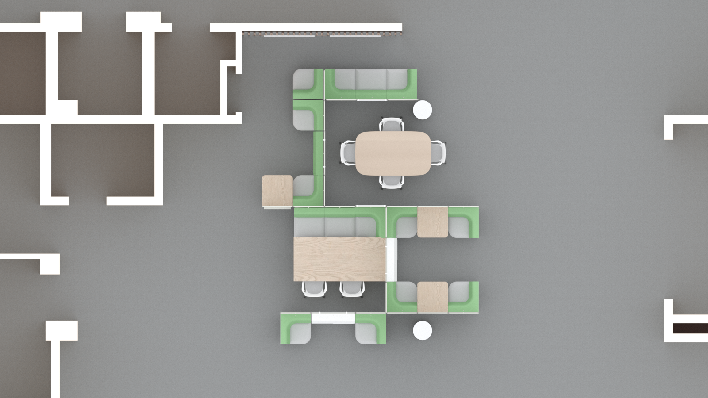
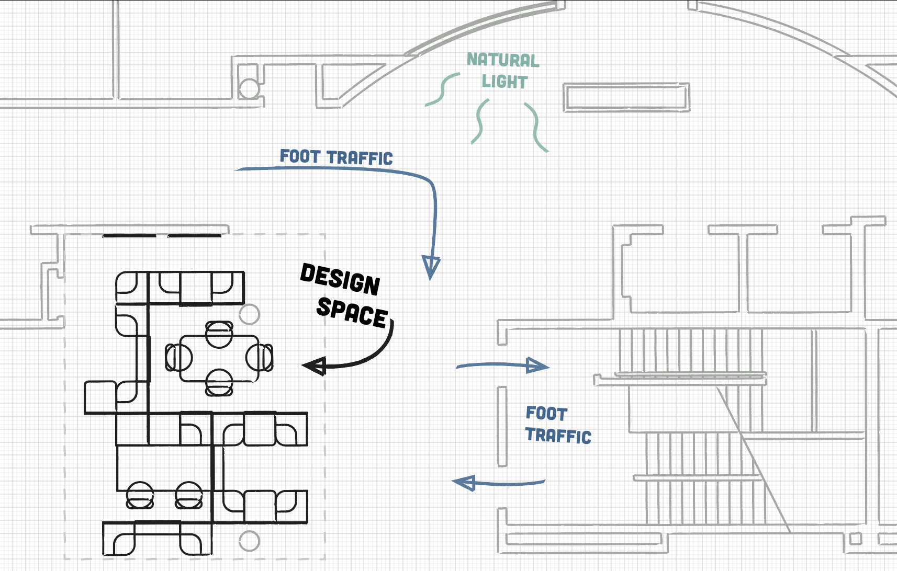
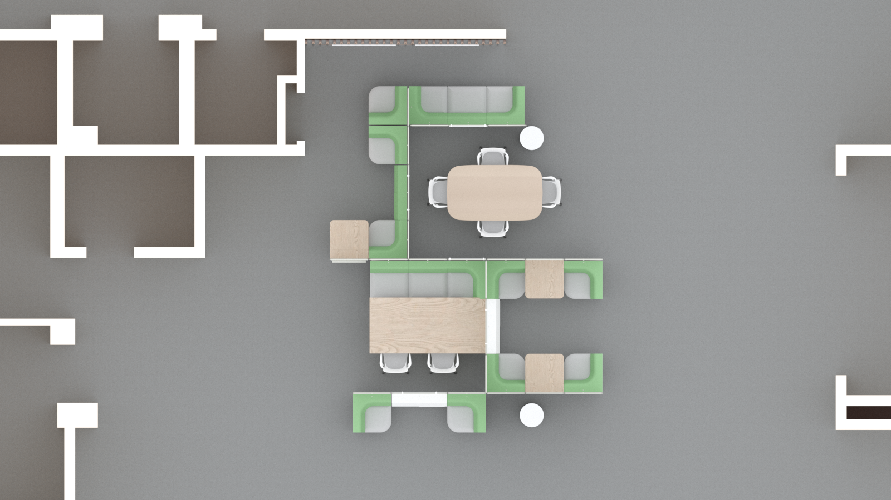
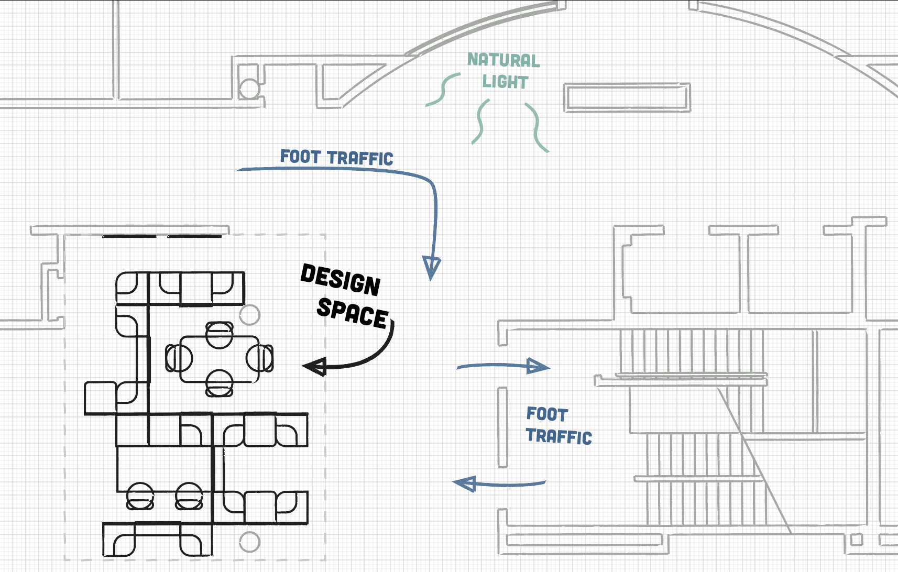

Proposal:
How can a physical space be better utilized to foster collaboration and meet the needs of the student body? Our vision is to transform this ill-used space on the third floor of the Shapiro Undergraduate Library to one that is enthusiastically occupied as a hub of teamwork and creativity. We wanted a space conducive for small group work effective as a centralized meeting hub for the entire floor. The university is working to redesign the third floor to “foster collaboration, creation, and connection” within the next two years. Of course, we wanted to further these ideals within the design space while also addressing immediate needs of the student body directly, to ensure the space is embraced and utilized to its full potential. Finally, we wanted to create an interesting space to work in-- an environment that is dynamic and varied within the existing small space while simultaneously pushing a modern aesthetic consistent with other newly renovated spaces in the library.
The Shapiro Undergraduate Library is one of the most populated study areas at the University of Michigan, however, according to a Suma Initiative Count conducted by the American Library Association, students are working collaboratively on the 3rd floor an estimated 44.72% less than they are in the other major library, the Duderstadt (95% CI = [29.56%, 59.88%], p = 3.2e-05). In order to fully understand the users of library and the design space, we conducted our own survey of students working in the Shapiro Undergraduate Library (n = 46) to gather an understanding of their study habits and preferences. This information was used to drive decisions behind each of the following key components of our design.
In discussing noise levels of their ideal collaborative space, 53% of survey respondents preferred it noisier, while the remaining 47% liked it quieter. However, there was general consensus that discussion was preferred as long as it was not disruptive; one student described the noise level of their favorite group-work spot as “quiet enough yet talking is allowed.” As such, we have redesigned the space primarily around winding Public Office Space Screens to form semi-private spaces. The aim of these partial enclosures is to provide enough privacy to encourage low-volume discussion while also remaining open enough to remind students to maintain courteous noise-levels.
When asked what is one thing they would change about the library, respondents predominantly reported they would add more tables and seating. It was also reported that smaller tables (4-6 people) were preferred on average over larger ones (8-10 people). We have included two 4-6 person tables -- a Peninsula Table and an Everywhere Oval Table -- as well as several individual Cafe Desks to provide additional options for private study and discourage individuals from taking over larger tables, which was a complaint raised in our survey. Our arrangement should incentivize students looking to study by themselves or with partners to do so on the perimeter, while leaving the larger interior tables available for groups.
Respondents identified a need for easily accessible outlets in the current space. Currently, electrical outlets are only accessible around the walls and columns, leaving those in the middle of the room without access to power. Most students use some form of portable electronic device for academic and/or personal purposes, 86% of respondents reported that access to power outlets is either important or very important to them. We have alleviated the lack of accessibility of power supplies by selecting tables and seating arrangements that are compatible with the Mini Logic. In total, 22 new outlets have been added to the space.
Writing and visualization tools are important methods of fostering communication and creativity. Our survey respondents on average valued writing tools like whiteboards over other visualization tools like monitors. Our configuration places a number of Whiteboard Overhangs around the space. Additionally, there will also be two large Glass White Boards on the structural wall bordering to the space that Sectional Seating and Social Chair arrangements will allow students direct access to work around.
“Make the chairs softer. They're not bad for short periods but long studies are brutal on the behind.” - Anonymous survey response. In a University that prides itself on academic rigor, it is no wonder that students are studying for longer periods of time and demanding more comfortable seating. 74% of respondents reported that comfort is either important or very important. We included a number of softer Sectional Seating from the Public Office Landscape series throughout the space, as well as Keyn Rolling Office Chairs around the tables that will no doubt be an upgrade to the existing wooden chairs.
The use of Screens throughout the design space allowed us to achieve a varied landscape across a small environment. This allows for not only a greater sense of privacy but also a nonhomogeneous space that would be more interesting to return to. We also wanted the space to be inviting -- natural openings in the partitions face areas of higher foot traffic and much of the seating is faces outward from the to encourage meeting up. While not a single survey respondent reported they use the third floor as a meeting spot (with 87% of respondents reporting they meet on the first or second floors), aforementioned decisions aim to improve the visibility of students in the space in the hope of transforming this space into the landing hub the university desires. Finally, we wanted to take full advantage of the surrounding environment. Openings in the partitions face windows to maximize the natural light that reaches the space. The space also strategically winds around columns to utilize them in improving privacy and to avoid awkward interactions the rest of the furniture.
We used the recently renovated first floor of the Shapiro Undergraduate Library as inspiration to add natural elements to the third floor. As a landing space for the elevators, the stairs, and the glass sky bridge, we wanted to incorporate the colors and materials of the first floor lobby to increase the aesthetic coherence. First, we propose a functional accent wall with natural wood, glass with impression leaves, and back lighting behind hanging glass whiteboards. This wall’s inspiration comes from the natural landscape of Michigan, the view from the sky bridge, and the lack of natural light. It is also a representation of the science periodicals section housed here where natural sciences and material sciences meet. The first floor also has the pillars wrapped in metallic, which want to carry through, since the pillars are carried through the building. Adding to this aesthetic we also envision the blend of earthy colors (particularly greens) to contrast with the metallic of the new furniture bases and the metallic wrapped pillars to bring new life to the floor.